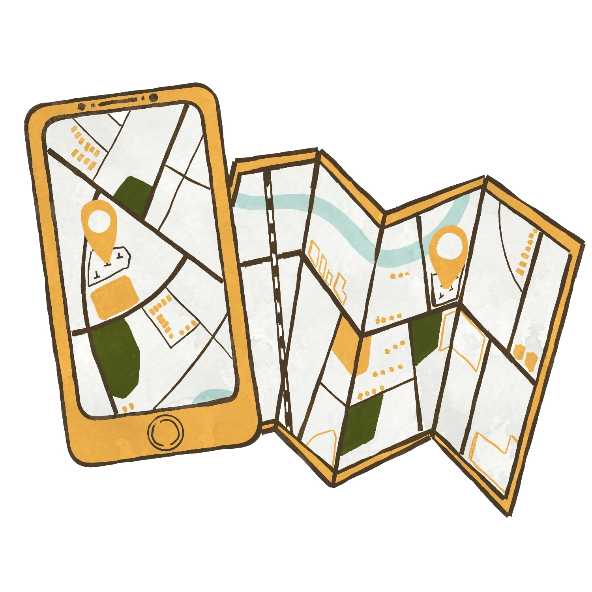

サービス内容
店長川原 馨
墓参り代行、墓じまい代行 ( 大阪・近畿圏 )はお任せ下さい。
新しいタオルを使って墓石を手洗い
"まごころ"を込めて墓石のお掃除を致します。
※お申し込み方法はお電話かラインにてお願い申し上げます。
ご利用の流れ
1、お電話を頂き、お掃除とお参りを希望する「 お墓の所在地 」を詳しくお教え下さい。

2、ご指定頂いたお墓を訪ね、墓地の草むしりと墓石のお掃除を致します。墓石は新しいタオルを用いて「まごころ」を込めて手洗い致します。
3、お花とお供え物とお線香をお供えして合唱・黙祷を致します。
4、美しくなったお墓の写真を送信致します。確認し、ご納得頂けましたら指定の口座に送金をお願い致します。
基本料金
・料金について
墓参り代行は墓石一基につき7,000円
※片道50kmを越える場所の墓参りはご相談の上、別途交通費をプラスさせて頂きます
・日時について
基本的にお墓参りの日時は当店にお任せ頂くこととなります。日時指定や特別なお供えを希望される場合はご相談に応じさせて頂きます。
・お支払い方法について
お支払い方法は、墓参り終了後に写真を送信致しますのでご確認の上、ご納得頂けましたら弊社指定の口座にご送金をお願い申し上げます。